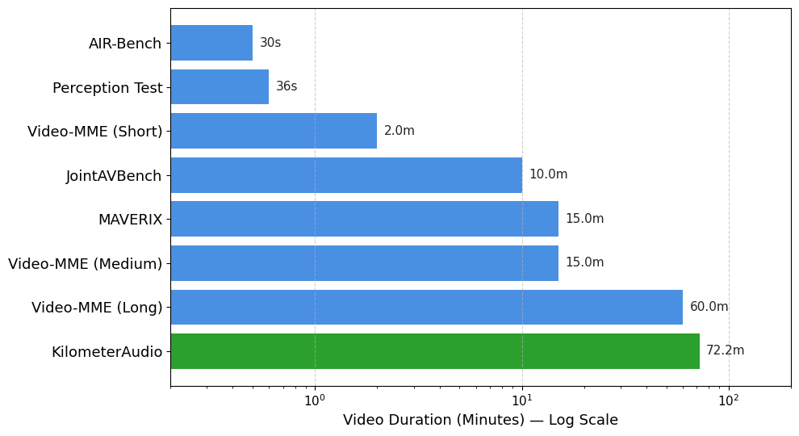

Q: When passing by Caffe Nero, what sound can be heard?
Q: There is a busker with a guitar in the outdoor mall wearing a cup. What song are they singing?
Q: Around what time of the video is there an ambulance heard?
Q: At some point during the video, the time can be inferred from a bell ringing. How many times did the bell ring and what was the time of day?
Figure 1: KilometerAudio — Example KilometerAudio questions from the validation set (correct answer in green), with embedded YouTube videos queued to the relevant moment in each hour-long walking tour. Each question requires joint reasoning over the audio track and visual stream: identifying sound sources at visual landmarks, recognising live music in the wild, localising audio events in time, and combining acoustic counting with visual cues.
To assess models' audio-visual capabilities in large-scale environments, we introduce the KilometerAudio benchmark as part of the Fourth Perception Test Challenge at ECCV 2026 (Kitashov et al., 2026). It tests the ability of foundation models—including agentic approaches—to reason about the interlink between audio and visual modalities in very long videos captured while walking for several kilometers around an urban environment. Natural sounds automatically captured in these public YouTube videos include human-made objects (cars, motorbikes, church bells, sirens), natural sounds (birds chirping and dogs barking), speech and street music, as well as acoustic urban pollution. Importantly, the videos are unedited and contain no overlay music, making them ideal for naturalistic multimodal reasoning. Due to the nature of walking-tour videos, audio is often caused by an event out of sight of the camera. Reasoning jointly about in-view visuals and out-of-view audio across hour-long recordings makes this benchmark uniquely challenging.
In the KilometerAudio task, a model receives a full hour-long walking-tour video (1–3 hours long, more than 70 minutes on average) including its audio track, together with a question and five candidate answer options, out of which only one is correct. All questions were collected with human raters and verified by our research team to require processing both the audio and visual modalities:

Figure 2: Comparison with existing multiple-choice audio-video benchmarks. KilometerAudio features the longest videos (72.2 minutes on average) and focuses exclusively on audio-visual events; Video-MME (Long) has videos up to 1 hour long, but only a small fraction of its questions focus on audio events.
The validation split (8 questions on 6 videos) reuses the audio-related questions of the hour-long video QA benchmark from the 2024 and 2025 editions. All 500 test questions are new, and only 3 of the 218 test videos appeared in previous editions. No training split is provided, enforcing zero-shot evaluation. The evaluation metric is top-1 accuracy.
| Split | Num Videos | Num Questions |
|---|---|---|
| Train | — | — |
| Validation | 6 | 8 |
| Test | 218 | 500 |
| Total (kilometeraudio.zip) | 221 unique | 508 |
The table below summarises the awarded entries on the KilometerAudio test set compared to the random baseline:
| Award / Rank | Team | Top-1 Accuracy | Resources |
|---|---|---|---|
| Baseline | Random | 0.174 | — |
| Runner-up | WW11 | 0.752 | report |
| Winner | IUCV | 0.782 | report |
| Best-performing† | CloudAI-evolve | 0.864 | report and slides |
| Best Generalist (all 4 tracks) | Wind_Rain_Tower | 0.506 | report |
†Best-performing entry overall, not eligible for monetary prizes due to Google affiliation.
@misc{kitashov2026perceptiontest2026challenge,
title={Perception Test 2026: Challenge Summary and Extension to City-scale Audio-Visual Reasoning},
author={Fedor Kitashov and Jo{\~a}o Carreira and Shiry Ginosar and
Dima Damen and Andrew Zisserman and Viorica P{\u{a}}tr{\u{a}}ucean},
year={2026},
eprint={2610.12081},
archivePrefix={arXiv},
primaryClass={cs.CV},
url={https://arxiv.org/abs/2610.12081}
}